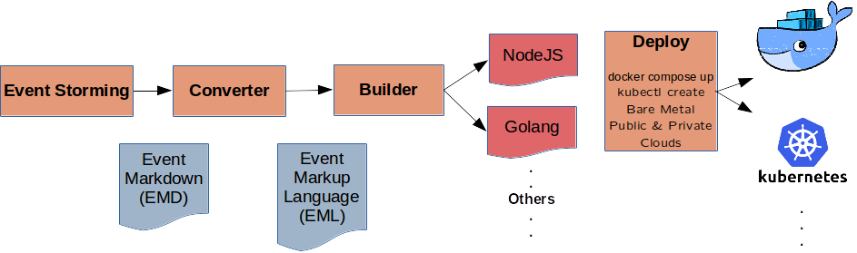

Event Sourced Systems Made Simple

Event sourcing and CQRS/ES based “microservices” are increasingly seen as a nice way to build cohesive, loosely coupled systems with good transactional integrity. There is a knack to building software that way, so although the resulting systems tend to be much simpler and easier to understand than traditional (e.g.) object oriented implementations, there is a bit of a learning curve.
LES attempts to address this in three ways:
Fast microservice prototyping: Go directly from an event storming to a working event sourced API.
“Architect in a box”:
les validateassesses whether a prototype will result in a “good” event sourced microservice - cohesive, loosely-coupled, transactionally consistent. Thenles-node -bbuilds a deployment-ready NodeJS API with plenty of guide fences and best practices in place as developers go forward customizing it. If you have your own coding standards or don’t like NodeJS, implement your own in a language of your choice.“Citizen IT Developer”. One of the goals of the LES project is to enable “business coders”, “power users” and entrepreneurs with little technical knowledge to build highly scalable event sourced microservices from scratch, basically “I’ve made this API for my startup - could you build me an app for that?”
LES is currently in alpha. We have started using 1. and 2. in Real Life projects. But no.3 (Citizen IT Developer) especially is still quite experimental, with a good number of features missing.
LESTER takes an event storming and turns it directly into deployment-ready commands, events, documentation and infrastructure. It makes prototyping and implementation of an event based system simple and keeps it closely aligned with business objectives and requirements. Its goal is to remove many of the hurdles associated with adopting CQRS/ES.
The LESTER tooling is currently in alpha, but has been used for Real Life projects.
In:
Event Markdown (EMD) is a machine- and remote collaboration friendly way of capturing the results of an event storming. It attempts to distract as little as possible from what makes the stickies & paper-on-the-wall version so successful and to augment it: Easy to do. Brings business and technical people together. Fun. Deliberately fuzzy to discourage getting lost in detail not (yet) needed.
Event Markup Language (EML) is a simple implementation-agnostic YAML DSL for describing event sourced systems, custom business rules and read models.
Out:
- Fully functional, scalable and maintainable CQRS/ES system.
- API, with Swagger API playground.
- Language-agnostic. The reference implementation builds systems in NodeJS. An experimental Golang version exists. There is a prototype for turning an event markup language spec into a serverless implementation on Azure.
- Currently supported event store: https://eventstore.org.
- Read model storage in Postgres, LevelDB, Cassandra or in memory.